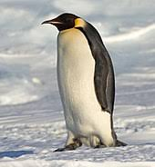
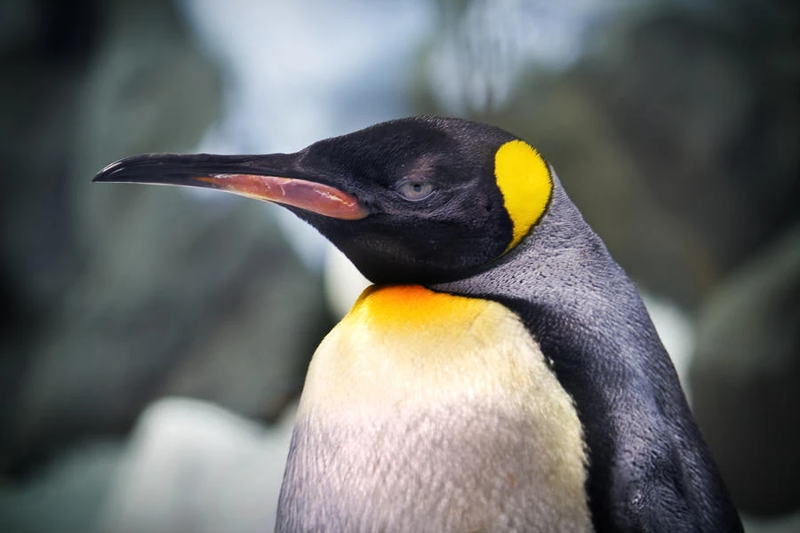

Pingüino de Adelia
Los pingüinos son un grupo de aves marinas altamente adaptadas al medio acuático. Son conocidos por su apariencia distintiva, con un cuerpo robusto y alas modificadas en forma de aletas que les permiten nadar de manera eficiente en el agua. Aunque no vuelan, son excelentes nadadores y pueden sumergirse a grandes profundidades para buscar alimento. Existen varias especies de pingüinos que se distribuyen principalmente en el Hemisferio Sur, aunque algunas especies habitan en regiones más templadas. La especie más conocida y emblemática es el pingüino emperador, que se encuentra en la Antártida. Son los pingüinos más grandes, llegando a medir hasta 1,2 metros de altura. Otros pingüinos notables incluyen al pingüino rey, el pingüino de Adelia, el pingüino de Magallanes y el pingüino de Galápagos, entre otros. Los pingüinos tienen adaptaciones especiales que les permiten sobrevivir en ambientes fríos. Tienen una capa de plumas densa y aceitosa que los ayuda a mantenerse secos y aislados del frío. También tienen una capa de grasa debajo de la piel que actúa como aislante adicional. Además, su sistema circulatorio les permite reducir el flujo de sangre a las extremidades y conservar el calor en el cuerpo. La alimentación de los pingüinos varía según la especie y su ubicación geográfica, pero en general se alimentan principalmente de peces y krill. Utilizan su aguda visión bajo el agua para detectar y perseguir a sus presas. Algunas especies de pingüinos migran grandes distancias en busca de alimento, mientras que otras permanecen en la misma área durante todo el año. La reproducción de los pingüinos es fascinante. La mayoría de las especies forman parejas monógamas y regresan al mismo sitio de cría año tras año. Construyen nidos con piedras o en el suelo y ponen uno o dos huevos. Ambos padres se turnan para incubar los huevos y cuidar a los polluelos. Después de la eclosión, los polluelos son alimentados con el alimento regurgitado por los padres hasta que son lo suficientemente grandes para buscar comida por sí mismos. Aunque los pingüinos son animales queridos y considerados como símbolos de la vida silvestre, muchas especies de pingüinos enfrentan amenazas en la actualidad. El cambio climático, la destrucción de su hábitat, la pesca excesiva y la contaminación marina son algunos de los factores que ponen en peligro su supervivencia. Varios esfuerzos de conservación se llevan a cabo para proteger a estas aves y garantizar su futuro.
 Pingüino Rey
Pingüino Emperador
Pingüino de Adelia